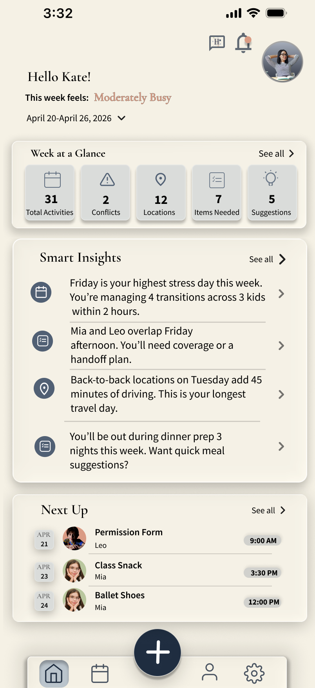
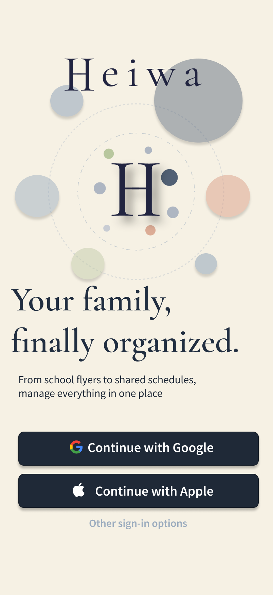
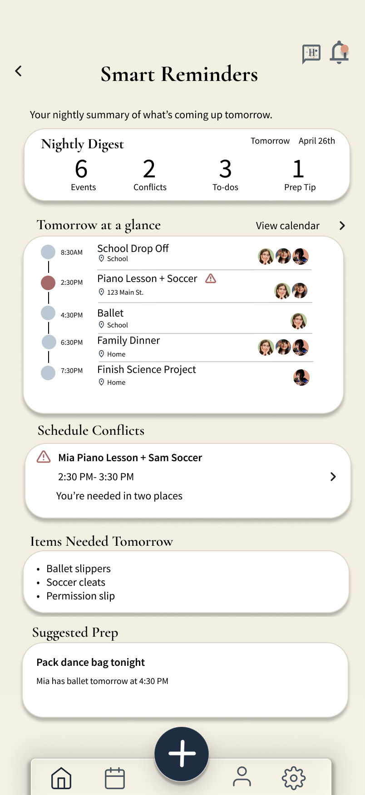
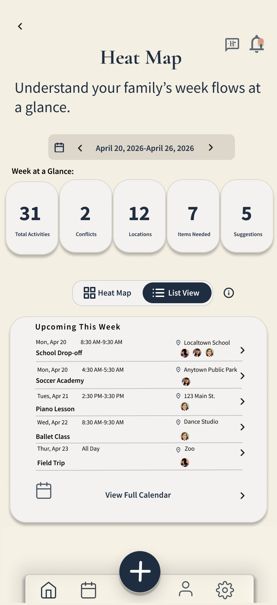
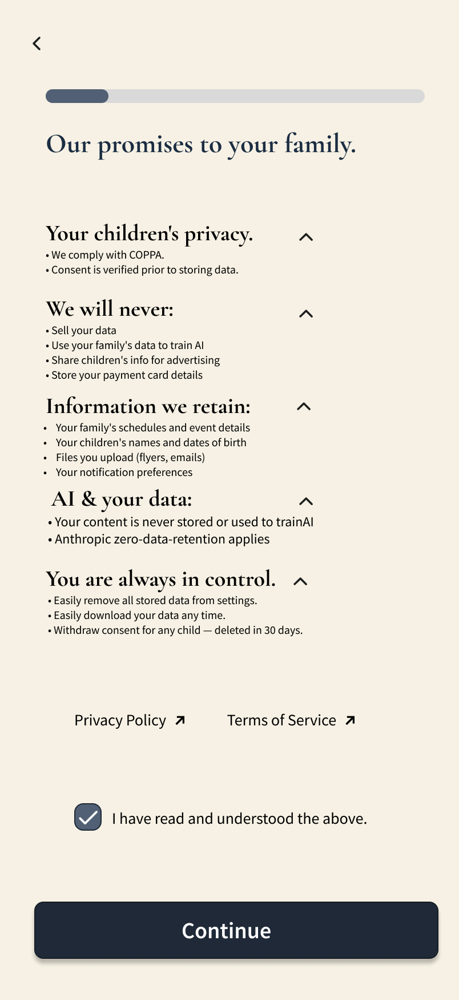
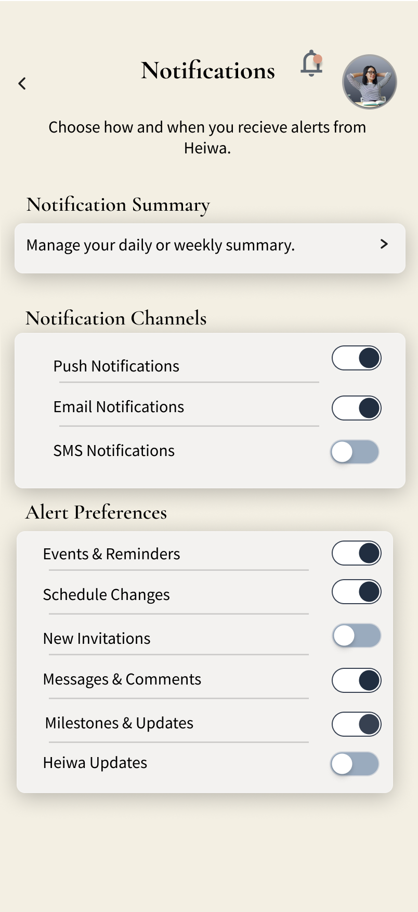
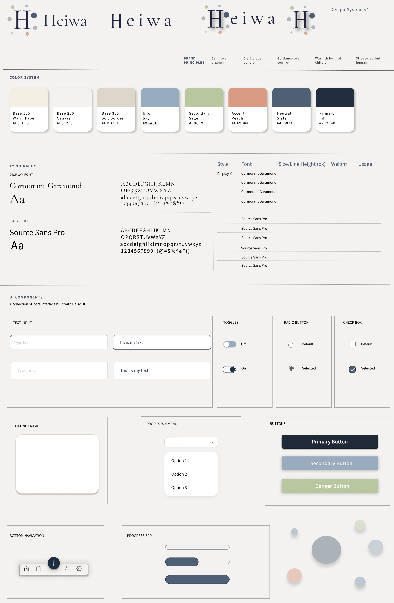

AI family operating system
Reducing the chaos tax of modern family logistics.
Heiwa is a calm, intelligent family operating system designed to help parents manage schedules, school flyers, shared responsibilities and the emotional load of planning.

Role
Lead designer, product strategy, UX direction, visual system
Focus
AI-assisted coordination, cognitive load, trust, family systems
Format
11-week MVP product concept and high-fidelity design system
Problem
Family logistics are invisible work until something breaks.
Parents are often managing school flyers, sports schedules, messages, appointments, permission slips and last-minute changes across multiple channels. Heiwa reframes that chaos as a system that can be captured, clarified and shared.

Product philosophy
Not another calendar. A calmer operating layer.
Heiwa is designed to do more than store events. It interprets family activity patterns, flags moments of overload and helps parents understand how the week feels before the stress arrives.
Smart reminders
Turning schedules into understandable patterns.
The system translates logistics into plain-language reminders: transition-heavy days, overlapping activities, dinner prep pressure and items needed tomorrow. The goal is to reduce the mental math parents perform every week.

Family flow
Making weekly intensity visible at a glance.
The heat map concept helps families see activity density, conflicts, locations and support needs without digging through every event. It gives structure to the invisible load of family coordination.

Trust
Designing trust into AI family systems.
Because Heiwa handles children’s schedules, family routines and uploaded documents, trust cannot be treated as an afterthought. The experience makes privacy, consent and user control visible as part of onboarding.


Attention design
Notifications should reduce stress, not create it.
Heiwa’s notification settings separate channels from alert types so families can control how much the product interrupts them. The system is designed around sustainable attention instead of constant urgency.
Visual system
Warmth, structure and clarity.
The design system uses soft paper tones, muted slate, sage and peach accents, rounded cards and restrained hierarchy to create a product that feels supportive without becoming childish.

Reflection
Designing for family systems means designing for emotional bandwidth.
Heiwa helped me explore how AI can support family coordination without replacing human judgment. The strongest design challenge was balancing automation with trust, warmth with clarity and intelligent insights with user control.